Zao
Zao · Miyagi
Zao
Highlighted on the Miyagi map.

Stay
岩盤浴すみかわ
Ganban Abisu Mikawa
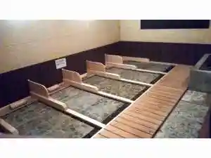
たびの邸宅 宮城蔵王
Tabino Teitaku Miyagizaou
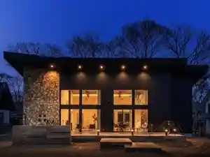
Villa Qualite ヴィラ・カリテ
Villa Qualite
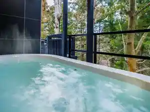
オーベルジュ 別邸 山風木
Ooberuju Bettei Yamakaze Ki
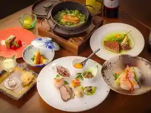
星灯りの宿 まほろば
Hoshi Akari No Yado Mahoroba
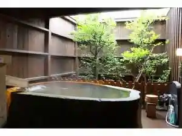
湯遊び宿 旬樹庵 さんさ亭
Yu Asobi Yado Jun Ki Iori Sansa Tei
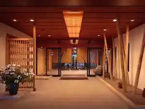
大沼旅館
Oonuma Ryokan
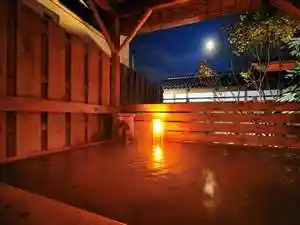
カニとうなぎの伝説と遠刈田温泉 たまや旅館
Kani Tounagino Densetsu To Tougatta Onsen Tamaya Ryokan
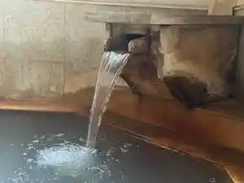
個室食事処と貸切風呂が愉しめる宿 かっぱの宿旅館三治郎
Koshitsu Shokuji Tokoro To Kashikiri Furo Ga Tanoshi Meru Yado Kappano Yado Ryokan Sanji Rou
旬菜湯宿 大忠
Jun Saitou Yado Daichuu
バーデン家 壮鳳
Baaden Ie Sou Ootori
遠刈田温泉 旅館 源兵衛
Tougatta Onsen Ryokan Genbee
チルアウトグランピング蔵王
Chiruautoguranpingu Zaou
隠れ家village 薪のくつろぎ 蔵王
Kakure Ie Village Takigi Nokutsurogi Zaou
GONZOU-HOUSE
GONZOU-HOUSE
温泉山荘 だいこんの花
Onsen Sansou Daikonno Hana
ペンション ウッドチャック
Penshon Uddochakku
竹泉荘 CHIKUSENSO ONSEN
CHIKUSENSO ONSEN
メルキュール宮城蔵王リゾート＆スパ
Merukyuuru Miyagizaou Rizooto & Supa
ゆと森倶楽部‐宮城蔵王の森林温泉リゾート
Yuto Mori Kurabu ‐ Miyagizaou No Shinrin Onsen Rizooto
Dining
ゆと森倶楽部
Yuto Mori Kurabu
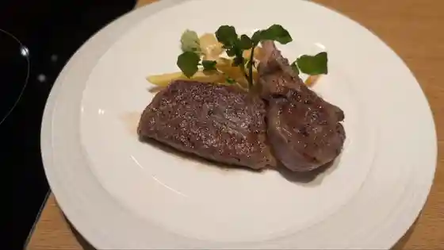
中華亭 分店
Chuuka Tei Bunten
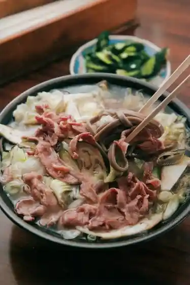
蔵王 手打ちそば 新楽
Zaou Teuchi Chisoba Shin Raku
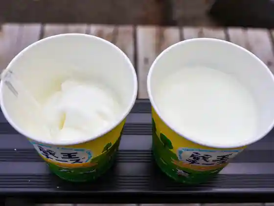
チーズキャビン
Chiizukyabin
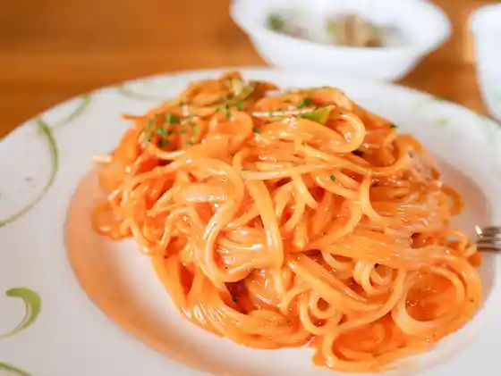
チーズ・シェッド
チーズ・シェッド
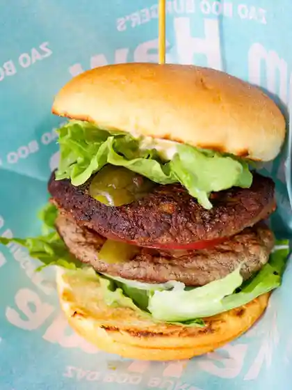
Zao Boo
Zao Boo
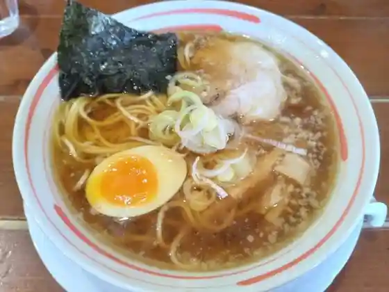
麺王 みらい 円田店
Men Ou Mirai Enda Mise
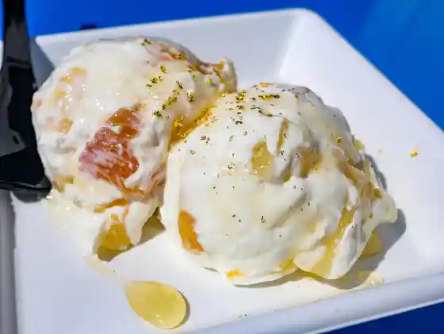
ヨーグルト工房 Atreyu
Atreyu
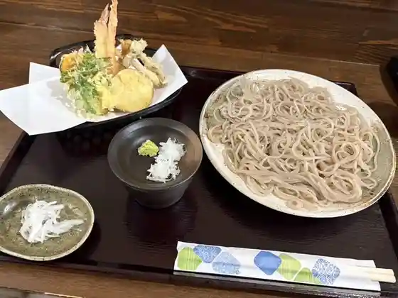
匠庵
Takumi Iori
corrot.
corrot.
らーめん家
Raamen Ie
自然薯とろろ専門店 蔵王 小妻坂山
Shizen Sho Tororo Senmonten Zaou Shou Tsumasaka Yama
醤油ラーメン専門店 京都ラーメン 草創
Shouyu Raamen Senmonten Kyouto Raamen Sousou
森の芽ぶき たまご舎 蔵王本店
Mori No Me Buki Tamago Sha Zaou Honten
蔵王山頂レストハウス
Zaou Sanchou Resutohausu
樹の里
Ki No Sato
ゼルコバ
Zerukoba
BRING
BRING
クロスロード
Kurosuroodo
チーズハウス
Chiizuhausu
賛久庵
San Kyuu Iori
蔵王湯けむりプリン
Zaou Yu Kemuri Purin
えんそう
Ensou
とんかつ あき
Tonkatsu Aki
別邸 山風木
Bettei Yamakaze Ki
アトリエデリス
Atoriederisu
石臼挽き手打ちそば おおみ
Ishiusu Hiki Teuchi Chisoba Oomi
808ドットミニ イコマファーム
808 Dottomini Ikomafaamu
ぶなの森
Bunano Mori
温泉山荘 だいこんの花
Onsen Sansou Daikonno Hana
Zao樹のなか 採りたてやさいとチーズケーキ
Zao Ki Nonaka Tori Tateyasaito Chiizukeeki
蔵王ブルーベリー農園 レストハウス
Zaou Buruuberii Nouen Resutohausu
竹泉荘
Take Izumi Sou
麺王みらい 宮店
Men Ou Mirai Miya Mise
旬菜湯宿 大忠
Jun Saitou Yado Daichuu
たまや旅館
Tamaya Ryokan
炭火焼肉 まほろば
Sumibi Yakiniku Mahoroba
玉浦屋
Gyokuho Ya
宮寿司
Miya Sushi
喰い処 あいざわ
Kui Tokoro Aizawa
蔵王樹氷庵
Zaou Juhyou Iori
旅館三治郎
Ryokan Sanji Rou
メルキュール 宮城蔵王リゾート＆スパ
Merukyuuru Miyagizaou Rizooto & Supa
鳥 みこし
Tori Mikoshi
番や
Ban Ya
はせがわ屋
Hasegawa Ya
そば処 飛鳥
Soba Tokoro Asuka
蔵王とうふ
Zaou Toufu
鎌倉温泉
Kamakura Onsen
レストランえぼし
Resutoran Eboshi
蜂蜜屋 六方
Hachimitsu Ya Roppou
ZAZAO
ZAZAO
大沼旅館
Oonuma Ryokan
鰹の本気 白石店
Katsuo No Honki Shiroishi Mise
くぬぎ庵
Kunugi Iori
蔵王山頂レストハウス 売店
Zaou Sanchou Resutohausu Baiten
ハラールカレーレストラン
Haraarukareeresutoran
えんがわ茶屋 やまびこ
Engawa Chaya Yamabiko
cafe ienoakari
cafe ienoakari
あづまや旅館
Azumaya Ryokan
さかい珈琲 蔵王山水苑前店
Sakai Koohii Zaou Sansui En Mae Mise
アクティブリゾーツ 宮城蔵王
Akuteiburizootsu Miyagizaou
慢瑤茶
Man You Cha
蔵王すずしろ
Zaou Suzushiro
味彩
Aji Sai
バーデン家 壮鳳
Baaden Ie Sou Ootori
和風れすとらん正六
Wafuu Resutoran Shouroku
蔵王わくわくファーム 農家レストラン
Zaou Wakuwaku Faamu Nouka Resutoran
ル・ココン
ル・ココン
さんさ亭
Sansa Tei
ケーキ蔵王牧場
Keeki Zaou Bokujou
まほろばの湯
Mahorobano Yu
花みず木
Hana Mizu Ki
宮城蔵王カントリークラブ
Miyagizaou Kantoriikurabu
MOKU
MOKU
ざおう食堂
Zaou Shokudo
ペンションそらまめ
Penshon Soramame
山ぼうし
Yama Boushi
産直市場みんな野
Sanchoku Shijou Minna No
翠嶺亭
Sui Mine Tei
木村商店
Kimura Shouten
こまくさ平
Komakusa Taira
いいかわ屋
Iikawa Ya
遊季亭まるふく
Yuu Ki Tei Marufuku
十割蕎麦 薫風
Juu Wari Soba Kunpuu
杜空館
Mori Sora Kan
蔵王 山荷葉
Zaou Yama Kayou
蔵王Kitchenさんく
Kitchen
レインボーヒルズ
Reinboohiruzu
ホテル蔵王メッツ
Hotel Zaou Mettsu
蔵王料理のうらく伸
Zaou Ryouri Nouraku Shin
菜食 左ェ門
Saishoku Hidari E Mon
ウインドスクエア
Uindosukuea
あ～ら 蔵王の芽ぶき市場だっちゃ
A ~ Ra Zaou No Me Buki Shijou Datcha
蔵王ハートランド手作り体験館
Zaou Haatorando Tezukuri Taiken Kan
会田菓子店
Aida Kashi Mise
ダイニング「コの字」
Dainingu ( Ko No Ji )
高原レストラン
Kougen Resutoran
SUZUKI BAKERY
SUZUKI BAKERY
食事とこけしの店 よしまつ
Shokuji Tokokeshino Mise Yoshimatsu
大空Cafe
Cafe
森とそよ風
Mori Tosoyo Kaze
心づくしの宿 源兵衛
Kokoro Zukushino Yado Genbee
セブンイレブン 遠刈田温泉店
Sebun'irebun Tougatta Onsen Mise
小料理はなのや
Koryouri Hananoya
居酒屋 やかた
Izakaya Yakata
リバーサイド
Ribaasaido
喫茶キャロル
Kissa Kyaroru
ペンション陽だまり
Penshon You Damari
星灯りの宿 まほろば
Hoshi Akari No Yado Mahoroba
カトー青果
Katoo Seika
レストランかもしか
Resutoran Kamoshika
黄金川温泉
Ougon Kawa Onsen
岩盤浴 すみかわ
Ganban Yoku Sumikawa
セブンイレブン 蔵王遠刈田店
Sebun'irebun Zaou Tougatta Mise
ピッツァハウス 富夢想野
Pittsuahausu Tomi Musou No
カフェ マーノ
Kafe Maano
居酒屋 たぬき
Izakaya Tanuki
フレッシュマート たかの
Furesshumaato Takano
レストハウスくもわくテラス
Resutohausu Kumowaku Terasu
みやぎ蔵王ゆうきや
Miyagi Zaou Yuukiya
チェリー
Cherii
蔵王売店
Zaou Baiten
室野井果実園
Muronoi Kajitsu Sono
CHEESE ATELIER MOZZAO
CHEESE ATELIER MOZZAO
フレスコキクチ 蔵王店
Furesukokikuchi Zaou Mise
菓子処 いとう
Kashi Tokoro Itou
味処 夢や
Ajidokoro Yume Ya
セブンイレブン 宮城蔵王バイパス店
Sebun'irebun Miyagizaou Baipasu Mise
やきとり蔵
Yakitori Kura
くるみ食堂
Kurumi Shokudo
もみじ亭
Momiji Tei
K9 PARK
K9 PARK
ツルハドラック 宮城蔵王店
Tsuruhadorakku Miyagizaou Mise
食事処 茶屋
Shokuji Tokoro Chaya
ファミリーマート 宮城蔵王町店
Famiriimaato Miyagizaou Machi Mise
いろり焼 松柏亭 宮城蔵王ロイヤルホテル
Irori Yaki Shouhaku Tei Miyagizaou Roiyaruhoteru
梅の家
Ume No Ie
割烹会席料理まほろば
Kappou Kaiseki Ryouri Mahoroba
ペンション 山の家 ラピス
Penshon Yama No Ie Rapisu
ひとめぼれ酒本舗
Hitomebore Sakamoto Ho
グラットンカフェ＆イザック
Gurattonkafe & Izakku
ファッションイン 津田屋
Fasshon'in Tsuda Ya
小次郎
Kojirou
佐藤果樹園
Satou Kajuen
蔵王爽清市場
Zaou Sou Seiichi Ba
白鳥ファーム
Hakuchou Faamu
バイオファーム 蔵王
Baiofaamu Zaou
福田果樹園
Fukuda Kajuen
隠れ家village 薪のくつろぎ 蔵王
Kakure Ie Village Takigi Nokutsurogi Zaou
悠 遊
Yuu Yuu
どんぐり
Donguri
LAWSON 蔵王曲竹店
LAWSON
居酒屋きてみよ
Izakaya Kitemiyo
温泉保養施設 元気荘
Onsen Hoyou Shisetsu Genki Sou
ペンション コットンくらぶ
Penshon Kotton Kurabu
酒肴処うみぼうず
Shukou Tokoro Umibouzu
ペンション ウッドチャック
Penshon Uddochakku
ジャックスヴィレッジ
Jakkusuvirejji
Tamagoya Zao honten
Tamagoya Zao honten
Restaurant Baeltz
Restaurant Baeltz
Zao Dairy Center Cheese House
Zao Dairy Center Cheese House
Kuidokoro Aizawa
Kuidokoro Aizawa
Shoan
Shoan
Chukatei Bunten
Chukatei Bunten
Keyaki Shokudo
Keyaki Shokudo
Chukatei Bunten
Chukatei Bunten
Coffee Restaurant Enso
Coffee Restaurant Enso
Sankuan
Sankuan
Dining Room Shiki
Dining Room Shiki
Zao Soba Shinraku
Zao Soba Shinraku
Miya Zushi
Miya Zushi
Zao Yamano Sobaya
Zao Yamano Sobaya
Meno Mirai Miya
Meno Mirai Miya
Yonezawa Beef Charcoal Grilled Bekoya
Yonezawa Beef Charcoal Grilled Bekoya
Japanese Restaurant Shoroku
Japanese Restaurant Shoroku
Mochimochi No Ki Shiraishi Zao
Mochimochi No Ki Shiraishi Zao
Shiroishi Umenchaya
Shiroishi Umenchaya
Restaurant Minori
Restaurant Minori
Juwari Soba Kumpu
Juwari Soba Kumpu
Tamauraya Pastry
Tamauraya Pastry
Sakesakana Dokoro Umibozu
Sakesakana Dokoro Umibozu
Suireitei
Suireitei
Marutama Shokudo
Marutama Shokudo
Ramen Shop Zao
Ramen Shop Zao
Pizza Restaurant Tom Sawyer
Pizza Restaurant Tom Sawyer
Teuchi Soba Yamanami
Teuchi Soba Yamanami
Zelkova
Zelkova
Himawaritei
Himawaritei
Mamma Millenia
Mamma Millenia
Cafe Taiken Kobo Tokuukan
Cafe Taiken Kobo Tokuukan
Yakiniku Ran
Yakiniku Ran
Hanamizuki
Hanamizuki
Restaurant Konterra
Restaurant Konterra
Shin the Back of Zao Cuisine
Shin the Back of Zao Cuisine
Pension Yama No Ie Lapis
Pension Yama No Ie Lapis
Petit Pension Cosmos
Petit Pension Cosmos
Restaurant Toge
Restaurant Toge
Seishincha Kaiseki Setsugetsuka Rikyuan
Seishincha Kaiseki Setsugetsuka Rikyuan
Midoriya
Midoriya
Koryori Mikoshi
Koryori Mikoshi
Koryori Hana No Ya
Koryori Hana No Ya
Zao Direct Marketing Market Restaurants Kamazawa
Zao Direct Marketing Market Restaurants Kamazawa
Cooking Kaiseki Cuisine Mahoroba
Cooking Kaiseki Cuisine Mahoroba
Yuki Tei Marufuku
Yuki Tei Marufuku
Maruichi Shokudo
Maruichi Shokudo
Wind Square
Wind Square
Resort Inn Zaomets
Resort Inn Zaomets
Misuzuzushi
Misuzuzushi
Genghis Khan Yakiniku Nabeya
Genghis Khan Yakiniku Nabeya
Tenguyama
Tenguyama
Ishii Hisayoshi Pastry
Ishii Hisayoshi Pastry
Chikyuya
Chikyuya
Nebuta
Nebuta
Sosaku Yofu Restaurant Kurafuto
Sosaku Yofu Restaurant Kurafuto
Takesui
Takesui
Cafe Restaurant Yasaka
Cafe Restaurant Yasaka
Howaito Radisshu
Howaito Radisshu
Mokkiri Nomi Kuidokoro
Mokkiri Nomi Kuidokoro
Kanehana
Kanehana
Kaita Pastry
Kaita Pastry
Shiroishi Ommen Suzuran
Shiroishi Ommen Suzuran
Mendokoro Aosate
Mendokoro Aosate
Onsen
Kami-no-Yu Day Onsen
Day-use bath in the Togatta Onsen town center
Kotobuki-no-Yu Day Onsen
Day-use bath in the Asahi-machi area of Togatta Onsen
Shop
Zao Dairy Center Cheese Cabin
Direct shop for Zao cheese, ice cream, and dairy souvenirs beside the factory
Farmers Market Minnano
Local produce market in Hirasawa selling farm goods
Sights
Zao Frost-Covered Trees (Snow Monsters)
Winter rime-ice trees shared across Zao, Shichikashuku, and Kawasaki
Zao Echo Line Autumn Foliage
Autumn colors along the Zao Echo Line mountain road
Mount Byobu
Peak on the Zao ridge with alpine views
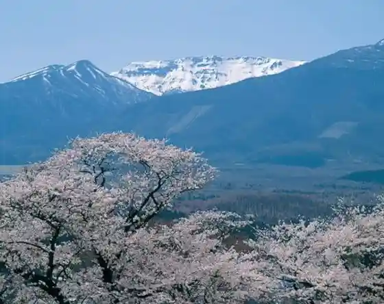
Sumikawa Gorge
Mountain gorge scenery in the Kuraisidake area
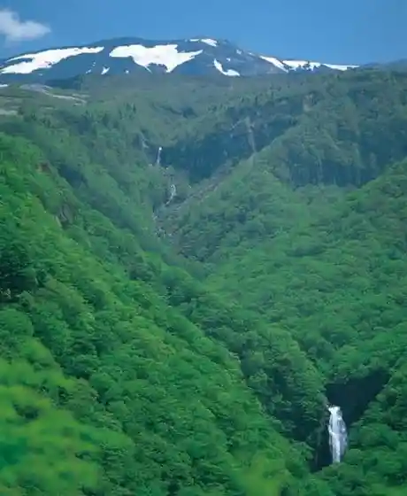
Sangai Falls & Fudo Falls
Named waterfalls in the Zao foothills
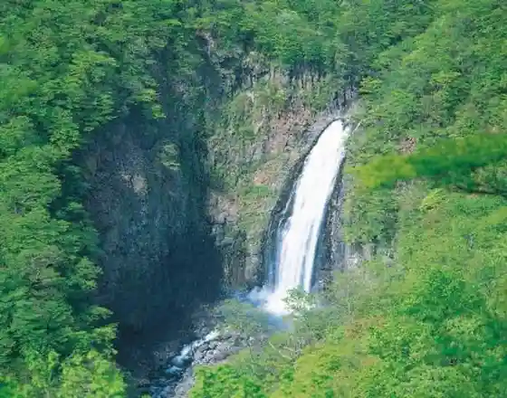
Kaerazu-no-Taki Falls
Waterfall on the Zao–Kawasaki boundary
Komakusa Flat Alpine Flowers
Alpine flower plateau on Mount Zao
Kattamine Shrine
Shrine in central Togatta Onsen
Togatta Onsen Morning Market
Morning produce market in Togatta Onsen
Miyagi Zao Kokeshi Museum
Museum of Zao-area kokeshi dolls
Kotori House Bird Forest Center
Prefectural wild-bird nature observation center
Tourist Flower and Tree Garden
Seasonal flower and tree garden in Magatake
Zao Blueberry Farm
Pick-your-own blueberry farm in Togatta